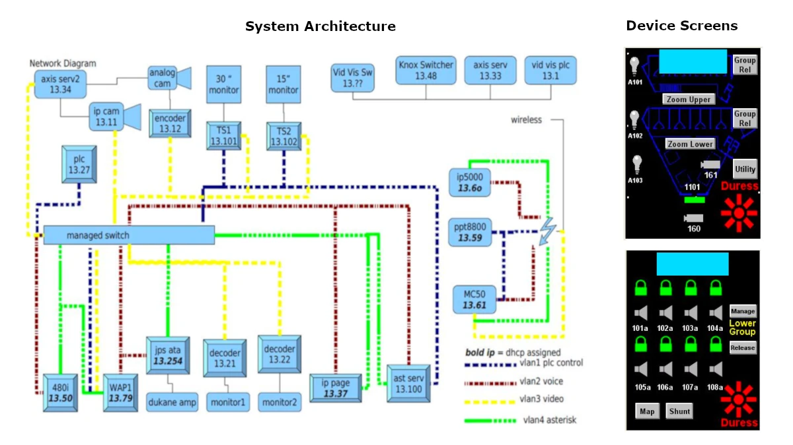
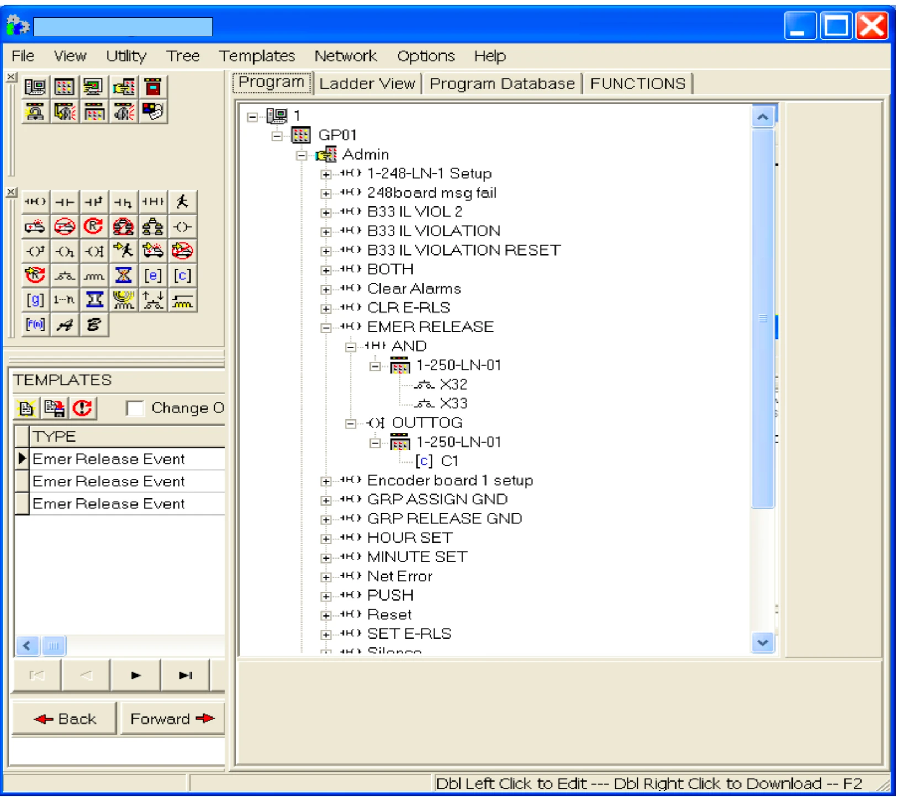
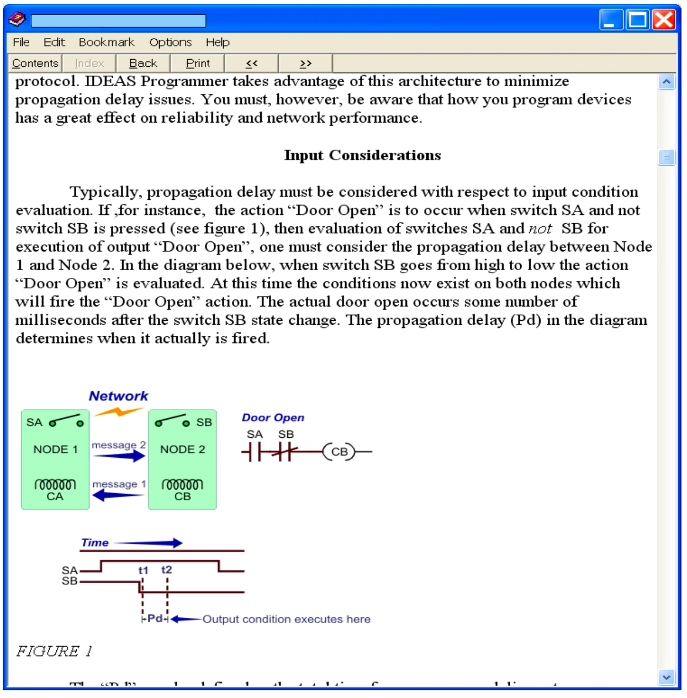
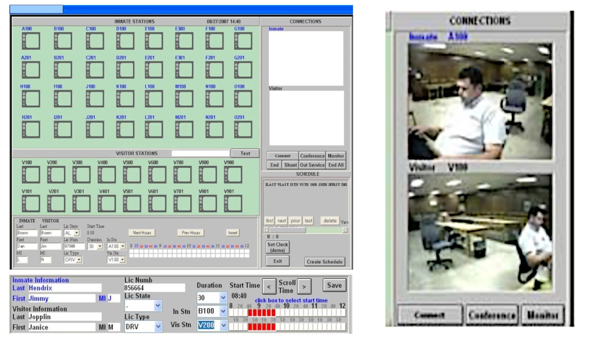

I build complete real-world systems that span embedded firmware, industrial controls, networking, backend services, and modern web applications. My work is focused on reliability, usability, and deployment in demanding environments.
I combine deep experience in microcontroller-based systems, distributed control networks, and industrial automation with modern full-stack development. I design and deliver entire solutions: hardware integration, firmware, communication layers, user interfaces, backend services, and deployment platforms.
Featured products include Libraforge™, an offline-first industrial knowledge, files, and forms platform for edge deployment, and ChangeFlow™, a workflow and approval platform for controlled operational change.
I specialize in building software that people actually use: configurable workflow systems, operational tools, internal platforms, role-based applications, and edge-hosted web systems. My strongest work centers on turning messy real-world processes into usable products with clear interfaces, reliable backend logic, and practical deployment models.
These are production systems I have designed, built, and deployed.
These projects represent my strongest product-focused, full-stack work.
Challenge: Finding drawings and other user documents for specific machinery or equipment rooms is costly and inefficient in most facilities. Documents are often illegible or missing. Users manuals and technical documents are often unavailable in the field and must be sought, often times with loss of critical time. Paper documents may be accessed by unqualified users.
Solution: Libraforge™ is an offline-first industrial file, forms, and knowledge platform that places critical files, procedures, forms, videos, notes, and work instructions directly at the point of use. It gives supervisors and administrators control over access, organization, search, compliance workflows, and updates while making documentation easy to consume from mobile devices in the field.
The platform is designed for deployment on compact edge hardware such as Raspberry Pi devices, where it can operate as a local web server and wireless access point. This allows teams to access equipment documentation, complete forms, capture field information, search notes, tag files, and manage role-based content even when cloud connectivity is limited, undesirable, or completely unavailable.
Full-Stack Scope: platform architecture, server-side rendering, user and role management, file delivery, search and metadata systems, note capture, form design and publishing workflows, PDF generation, local deployment, HTTPS support, and offline-first operation.
What Makes It Distinct: Libraforge™ is more than a file browser. It combines secure document delivery, department and role-based access control, built-in search, LibraNotes knowledge capture, LibraTags metadata, schema-driven forms, versioned publishing, signed PDF outputs, local branding, HTTPS certificate management, backup workflows, and edge deployment into a single appliance-style platform.
This is a full-stack, production-grade workflow engine designed for real operational environments—not a demo app.
ChangeFlow™ is a configurable workflow and approval platform built to control, track, and audit operational change across departments. It replaces fragmented, paper-based, and email-driven processes with a structured, rule-driven system that enforces accountability and provides full lifecycle visibility.
Challenge:
Solution:
I designed and built ChangeFlow as a configurable workflow engine where requests move through defined states (submit → review → approve → implement → close), with strict role-based permissions, automated routing, and event-driven notifications.
Full-Stack Scope:
This was not just a phone system—it was a distributed real-time communications and control platform integrating VoIP telephony, PLC-controlled physical systems, mobile HMIs, video, and traditional intercom infrastructure.
I designed and implemented a multi-layer operational system built around an Asterisk PBX on Debian Linux, integrating Omron PLCs, legacy intercom amplifiers, desktop SIP phones, Wi-Fi VoIP devices, handheld mobile HMIs running on constrained embedded hardware, Windows PCs, and live video feeds. The system unified voice, control, and media so operators could communicate, open doors, select intercoms, launch cameras, and interact with traditional infrastructure from modern IP endpoints.
System Architecture:
Custom Software & Integration Work I Built:
What Made It Technically Distinct:
Representative Engineering Responsibilities:

These excerpts highlight low-level protocol handling, real-time control, and cross-system integration.
Real-time PLC push-to-talk signaling from the handheld operator client:
// Python: PLC Push-To-Talk UDP Packet (real-time control from PDA)
sendstring = ('\x81\x00\x02%c%c%c\x01\x01\x00\x01\x23\x01\x00\x01\x80%c\x30%c%c%c' %
(int(pttdict['PLCNET']),
int(pttdict['PLCNODE']),
int(pttdict['PLCUNIT']),
value,
int(pttdict['MEMAREA']) >> 8,
int(pttdict['MEMAREA']) & 0x00ff,
int(pttdict['MEMBIT'])))
sendSock.sendto(sendstring, plcaddr)
Custom SIP client logic for auto-answer and audio routing using PJSIP:
// Python: SIP Client Auto-Answer + Audio Routing (PJSIP)
def pjsua_app_client_on_incoming_call(acc_id, call_id, rdata):
if pjsua_app.g_current_call != py_pjsua.PJSUA_INVALID_ID:
py_pjsua.call_hangup_all()
return
py_pjsua.call_answer(call_id, 200, None, None)
py_pjsua.adjust_rx_level(0, float(gl_rxLevel))
py_pjsua.adjust_tx_level(0, float(gl_txLevel))
Daemon-style PHP middleware parsing raw UDP control packets by byte offset:
// PHP: PLC Daemon Parsing Raw UDP Packet by Byte Offset
$icString = rtrim(substr($buf, WORD_WRITE_CODE_START,
(WORD_WRITE_CODE_END+1) - WORD_WRITE_CODE_START));
if (strncmp("ICCI", $icString, 4) == 0) {
post2DB("ttechICSystem", "localhost", "", "", "iccallins",
"ipaddress,port,timestamp,master_num,ic_string,ic_num,ackword,ackbit",
"'$clientIP','$clientPort','".date('Y-m-d G:i:s')."',
'$masterNum','$icString','$icNum','$ackWord','$ackBit'");
}
Asterisk call-file generation used to trigger intercom call workflows:
// PHP: Asterisk Call File Generation (triggering intercom call)
$callstring = "Channel: SIP/".$masterNum."\r\n";
$callstring .= "WaitTime: 30\r\n";
$callstring .= "Context: MAST".$masterNum."\r\n";
$callstring .= "Extension: 1".$icNum."\r\n";
$callstring .= "Priority: 1\r\n";
file_put_contents("/var/spool/asterisk/outgoing/mydial", $callstring);
Binary packet construction for direct PLC bit-level control over UDP:
// PHP: Binary Packet Construction for PLC Bit Control
$mypacket = pac
This system represents a full-stack industrial data pipeline—from field devices to analytics.
I designed and built a complete power monitoring and analytics platform that directly interfaces with industrial meters and PLCs using native protocols including Modbus TCP and Ethernet/IP (CIP). The system collects, processes, stores, and exposes energy data for reporting, visualization, and operational decision-making.
Challenge:
Solution:
I replaced the legacy system with a custom-built data acquisition platform that communicates directly with field devices, normalizes data across protocols, and stores time-series data in MongoDB for real-time and historical analysis.
Outcome:
The system replaced legacy middleware, provided real-time visibility into plant energy usage, enabled advanced reporting, and created a flexible platform for future expansion of industrial data collection.
Developed a series of Node.js scripts to document and validate ControlLogix PLC functional descriptions, translating complex PLC logic into understandable formats.
Challenge: Updating functional descriptions after 15 years of changes across approximately 50 PLCs, and validating settings against best practices, all while making the information comprehensible for users who cannot evaluate PLC rungs directly.
Solution:
Outcome: The combined efforts allowed for accurate documentation, validation, and explanation of complex PLC code, making it accessible and understandable for end users. This streamlined the process of updating and validating the PLC functional descriptions.
Example Code: The snippets below show the workflow from exported ControlLogix logic parsing, to boolean expression generation, to prompt-engineered AI translation into structured documentation.
// Parse exported L5K logic and normalize adjacent conditions into explicit boolean form
line = line.replace(/(\w+\[\d+\]\.\w+\[\d+\]\.\d+)\s+(?=\w+\[\d+\]\.\w+\[\d+\]\.\d+)/g, '$1 AND ');
// Example boolean expression generated from parsed PLC logic
const cleanedExpression = '(R707M2|BAGHOUSE ID MOT COOL F1..MOK AND NOT R707A1|BAGHOUSE ID MOT COOL F1..AL_HH) OR R707B3|FAN START PERMISSIVE';
// Prompt construction for PLC logic → structured documentation
const prompt = `
Evaluate the following logical expression and provide a plain English explanation.
Definitions:
${mappingsString}
Logical expression:
${cleanedExpression}
Additionally, provide a textual flowchart with conditions and actions based on the logical expression.
Rules:
- Preserve AND/OR relationships exactly
- Evaluate parentheses from inner to outer
- AND = sequential logic, OR = branching logic
- Include tag names and descriptions (tag|description format)
- Maintain execution semantics
Output Format:
Plain English Explanation:
Textual Flowchart:
`;
// OpenAI API call using HTTPS (low-level integration)
async function callOpenAI(prompt) {
const data = JSON.stringify({
model: 'gpt-4',
messages: [{ role: 'user', content: prompt }],
temperature: 0.0
});
const options = {
hostname: 'api.openai.com',
port: 443,
path: '/v1/chat/completions',
method: 'POST',
headers: {
'Content-Type': 'application/json',
'Authorization': `Bearer ${process.env.OPENAI_API_KEY}`,
'Content-Length': data.length
}
};
return new Promise((resolve, reject) => {
const req = https.request(options, (res) => {
let body = '';
res.on('data', chunk => body += chunk);
res.on('end', () => {
const parsed = JSON.parse(body);
resolve(parsed.choices[0].message.content.trim());
});
});
req.on('error', reject);
req.write(data);
req.end();
});
}
This project represents a core example of my distributed embedded systems work.
This system was built on LonWorks-based distributed microcontroller nodes communicating over twisted pair networks.
The distributed programming environment is built around a network of LonWorks microcontroller nodes connected via a twisted pair network. These nodes form the backbone of a building control network, commonly deployed in environments such as correctional facilities and courthouses. Each node within this system is equipped to monitor inputs and control outputs, facilitating automated tasks such as monitoring door positions, controlling door mechanisms, and managing intercom connections.
The software developed for this system offers a drag-and-drop programming interface, enabling intuitive and efficient programming of the distributed nodes. Users can place icons representing inputs, outputs, and actions within a hierarchical tree structure. This tree structure directly maps to the input and output conditions available in the firmware of the nodes. By dropping an input or output state onto the tree, the system automatically generates the corresponding code and inserts it into the node’s descriptor table.
Each node in the network operates as a stack-based machine. The programming environment compiles the tree structure into a series of instructions, with each node's descriptor table containing 10-byte descriptors. These descriptors serve as stack entries, holding all the information needed to evaluate and execute instructions. The descriptors are distributed across multiple nodes, enabling decentralized control and coordination within the network.
When executed, the code on each node processes its descriptors sequentially. Each descriptor not only carries the operation to be performed but also the location of the next instruction. This setup allows the distributed nodes to work collaboratively, executing a sequence of operations that span across the network, thereby achieving distributed control.
This design enables scalable and robust automation, particularly in environments that require the coordination of multiple control points across a large area. By leveraging the drag-and-drop interface, even complex control sequences can be programmed efficiently, ensuring that the system can adapt to a wide range of control tasks with minimal manual coding.


I designed and implemented a video visitation system that integrates Omron PLCs, Axis media servers, and Indusoft HMI software. This system was developed to improve security and streamline operations in correctional facilities, providing reliable video communication between inmates and visitors.
This system combined scheduling, database-backed visit management, live IP video, HMI interfaces, and PLC integration into a unified operational platform for correctional facilities.

I design and build embedded systems at both the firmware and hardware levels, including microcontroller-based devices, distributed control networks, and custom circuit board designs. I also developed firmware for security systems, intercoms, annunciation boards, and lighting controls using Neuron C on LonWorks-based microcontrollers. These systems included custom protocol conversion (UART to Omron), distributed communication layers, and tight integration with PLC-based industrial control systems.
I bring more than two decades of experience building embedded systems, industrial automation platforms, distributed control software, networking solutions, and full-stack applications. My background spans firmware, PLC systems, field communications, real-time media systems, backend services, and modern web platforms.
Earlier work focused on embedded firmware, distributed control, industrial networking, and plant systems integration. More recent work has expanded that foundation into full-stack product development, workflow platforms, edge-hosted systems, industrial data acquisition, and AI-assisted engineering tools.
If you'd like to get in touch, please email me at info@ind-docs.app.
I am open to remote full-stack engineering roles, consulting engagements, and product-focused software opportunities. Feel free to reach out if you are looking for someone who can design, build, and ship complete systems.